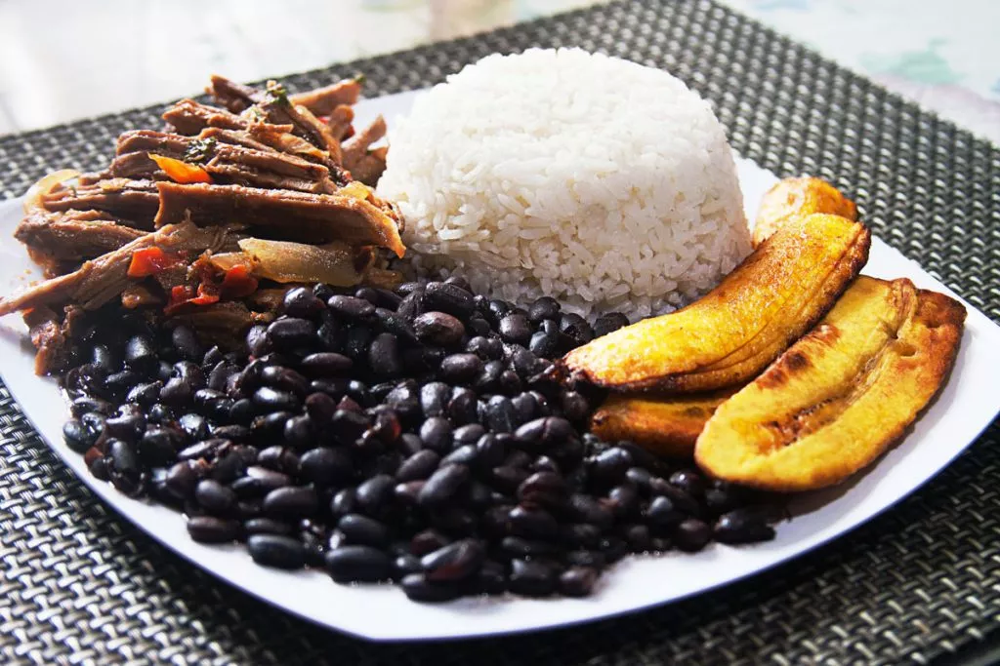

Paella
Description
The Pabellón Criollo is basically a dish that consists of flavorful shredded beef, rice and black beans that had been stewed. As simple as it may seem to be, many consider it to be Venezuela's national dish. Variations of the dish exist but the preparation remains the same.
It could be served with tajadas or fried plantains on the side, to add flavor as well as prevent the food from slipping to the sides of the plate. In this case the classic dish is called pabellón con baranda, in which “baranda” translates to guard rail.
Ingredients
For the shreddedbeef (carne mechada)
- 1 lb beef (skirt steak or flank)
- 2 celery stalks, cut into 4 pieces
- 2 carrots, cut into 4 pieces
- 1 onion, quartered
- 1 onion, finely chopped
- 1 red pepper, diced
- 3 cloves garlic, crushed
- A little Worcestershire sauce
- 1 teaspoon cumin
- 4 tablespoons tomato sauce
- Olive oil
- Salt
- Pepper
For the black beans (caraotas negras)
- 2 cups dry black beans, rinsed (preferably soaked in water overnight)
- 3 oz. ham ,diced
- 1 onion ,diced
- 2 cloves garlic , crushed
- 1 bay leaf
- Olive oil
- Salt
- Pepper
For the whiterice
- 1 cup white rice
- 2 cups water
- ½ teaspoon salt
- 1 teaspoon oil
- 1 clove garlic,crushed
- ½ onion,cut in half
- ½ green bell pepper,cut into strips
- ½ red bell pepper,cut into strips
How to make
Carne mechada
- Boil the beef in a pot of water with celery, quartered onion and carrots.
- Bring to a boil, cover and simmer for 3 to 4 hours.
- Remove from heat and let cool.
- Once cooled, shred the meat into strands with a knife or two forks until the beef is completely shredded.
- Heat two tablespoons of olive oil in a large skillet.
- Add the diced onions and when they start to brown, add the garlic and red bell pepper, a pinch of salt, a little black pepper and cumin.
- Add beef and stir for a few minutes while sauteing.
- Add a little water, tomato sauce and Worcestershire sauce to the meat.
- Stir often to bring to boil, then reduce heat and simmer for 15 minutes.
Caraotas negras
- In a pressure cooker, add 4 tablespoons of oil. Add ham and onions and cook until onions are translucent and ham is lightly browned, about 5 wminutes.
- Add the garlic and bay leaf and sauté for 1 minute.
- Add beans and stir.
- Pour the water, 1 tablespoon of salt, and pepper.
- Close the pressure cooker and bring to high pressure.
- Reduce heat to maintain pressure and cook at high pressure for 25 to 30 minutes (depending on pressure cooker).
- Open and release steam.
- If the beans are not quite cooked, simmer uncovered until they are tender.
Arroz blanco
- Add salt, oil, garlic, onion, bell pepper and rice in a large pot.
- Sauté all ingredients over high heat.
- When they are golden, add water.
- Remove the pan from the heat and remove the chunks of onion.